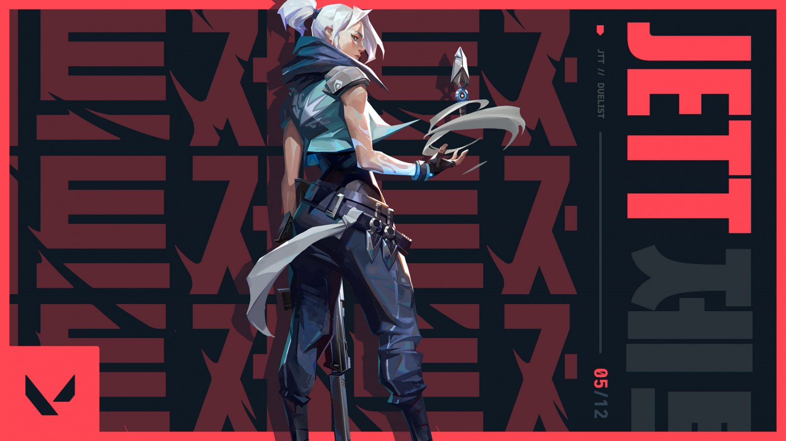
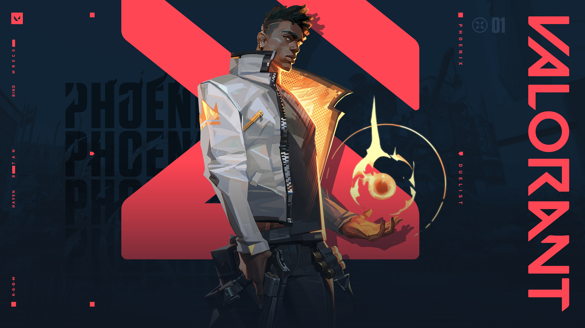
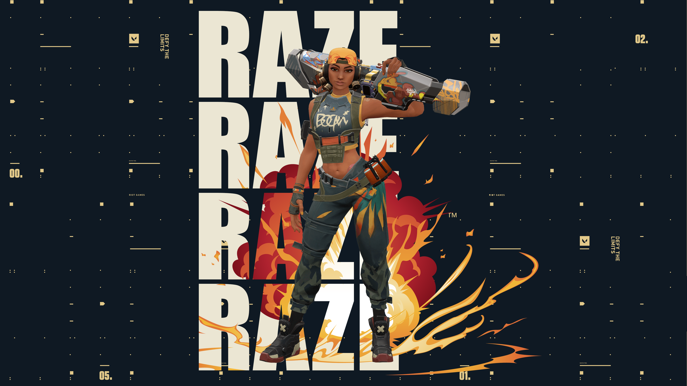
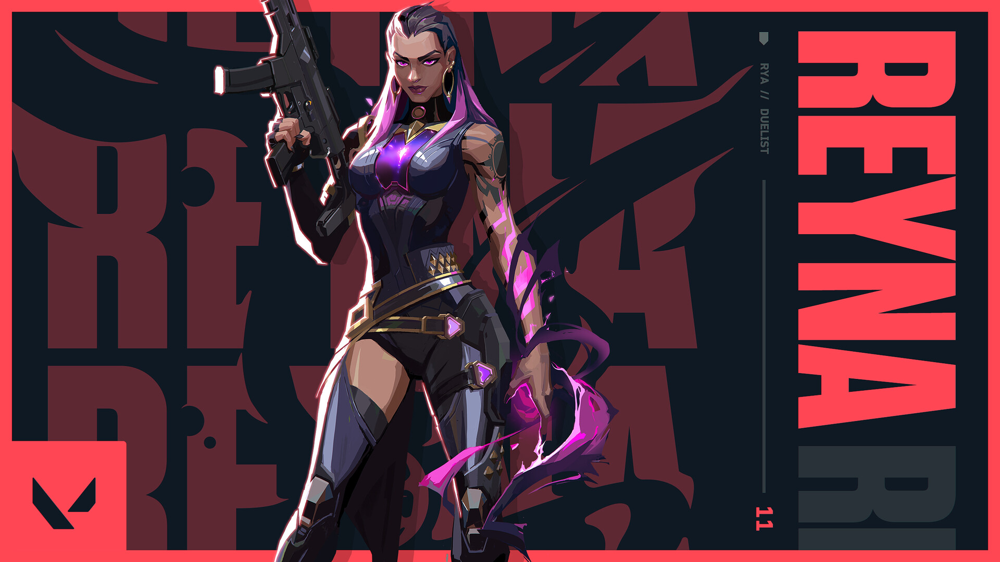
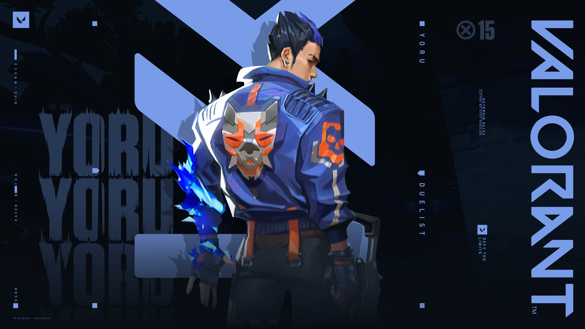

Duelist - Entry Fragger
Duelists are the offensive experts in VALORANT with abilities that allow them to be aggressive and self-sufficient when creating opportunities to engage with opponents. There are currently five Duelists in the game: Jett; Phoenix; Raze; Reyna; and Yoru.
Lets see them one by one :
- Jett
Representing her home country of South Korea, Jett's agile and evasive fighting style lets her take risks no one else can. She runs circles around every skirmish, cutting enemies before they even know what hit them.

Jett's abilities are :
- Q - UPDRAFT
INSTANTLY propel Jett high into the air.
- E - TAILWIND
INSTANTLY propel Jett in the direction she is moving. If Jett is standing still, she will propel forward.
- C - CLOUDBURST
INSTANTLY throw a projectile that expands into a brief vision-blocking cloud on impact with a surface. HOLD the ability key to curve the smoke in the direction of your crosshair.
- X - BLADE STORM
EQUIP a set of highly accurate knives that recharge on killing an opponent. FIRE to throw a single knife at your target. ALTERNATE FIRE to throw all remaining daggers at your target.
- Phoenix
Hailing from the U.K., Phoenix's star power shines through in his fighting style, igniting the battlefield with flash and flare. Whether he's got backup or not, he'll rush into a fight on his own terms.

Phoenix's abilities are :
- Q - CURVEBALL
EQUIP a flare orb that takes a curving path and detonates shortly after throwing. FIRE to curve the flare orb to the left, detonating and blinding any player who sees the orb. ALTERNATE FIRE to curve the flare orb to the right.
- E - HOT HANDS
EQUIP a fireball. FIRE to throw a fireball that explodes after a set amount of time or upon hitting the ground, creating a lingering fire zone that damages enemies.
- C - BLAZE
EQUIP a flame wall. FIRE to create a line of flame that moves forward, creating a wall of fire that blocks vision and damages players passing through it. HOLD FIRE to bend the wall in the direction of your crosshair.
- X - RUN IT BACK
INSTANTLY place a marker at Phoenix's location. While this ability is active, dying or allowing the timer to expire will end this ability and bring Phoenix back to this location with full health.
- Raze
Raze explodes out of Brazil with her big personality and big guns. With her blunt-force-trauma playstyle, she excels at flushing entrenched enemies and clearing tight spaces with a generous dose of “boom.”

Raze's abilities are :
- Q - BLAST PACK
INSTANTLY throw a Blast Pack that will stick to surfaces. RE-USE the ability after deployment to detonate, damaging and moving anything hit. Raze isn't damaged by this ability, but will still take fall damage if launched up far enough.
- E - PAINT SHELLS
EQUIP a cluster grenade. FIRE to throw the grenade, which does damage and creates sub-munitions, each doing damage to anyone in their range.
- C - BOOM BOT
EQUIP a Boom Bot. FIRE will deploy the bot, causing it to travel in a straight line on the ground, bouncing off walls. The Boom Bot will lock on to any enemies in its frontal cone and chase them, exploding for heavy damage if it reaches them.
- X - SHOWSTOPPER
EQUIP a rocket launcher. FIRE shoots a rocket that does massive area damage on contact with anything.
- Reyna
Forged in the heart of Mexico, Reyna dominates single combat, popping off with each kill she scores. Her capability is only limited by her raw skill, making her highly dependent on performance.

Reyna's abilities are :
- Q - DEVOUR
Enemies killed by Reyna leave behind Soul Orbs that last 3 seconds. INSTANTLY consume a nearby soul orb, rapidly healing for a short duration. Health gained through this skill exceeding 100 will decay over time. If EMPRESS is active, this skill will automatically cast and not consume the orb.
- E - DISMISS
INSTANTLY consume a nearby soul orb, becoming intangible for a short duration. If EMPRESS is active, also become invisible.
- C - LEER
EQUIP an ethereal destructible eye. ACTIVATE to cast the eye a short distance forward. The eye will Nearsight all enemies who look at it.
- X - EMPRESS
INSTANTLY enter a frenzy, increasing firing speed, equip and reload speed dramatically. Scoring a kill renews the duration.
- Yoru
Japanese native, Yoru, rips holes straight through reality to infiltrate enemy lines unseen. Using deception and aggression in equal measure, he gets the drop on each target before they know where to look.

Yoru's abilities are :
- Q - BLINDSIDE
EQUIP to rip an unstable dimensional fragment from reality. FIRE to throw the fragment, activating a flash that winds up once it collides with a hard surface in the world
- E - GATECRASH
EQUIP to harness a rift tether FIRE to send the tether out moving forward ALT FIRE to place a tether in place ACTIVATE to teleport to the tether's location
- C - FAKEOUT
EQUIP an echo that mimics footsteps when activated FIRE to activate and send the echo forward ALT FIRE to place an echo in place USE the inactive echo to send it forward
- X - DIMENSIONAL DRIFT
EQUIP a mask that can see between dimensions. FIRE to drift into Yoru's dimension, unable to be affected or seen by enemies from the outside